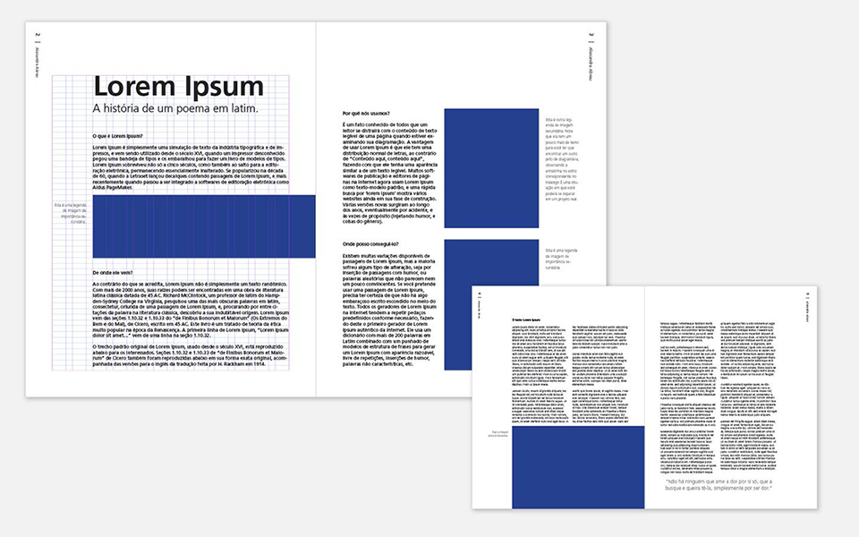
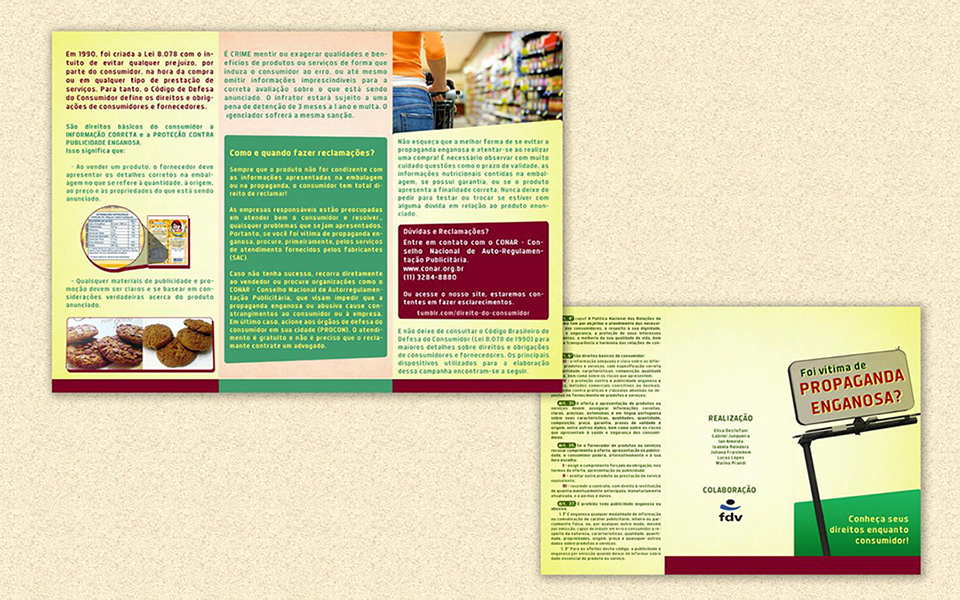
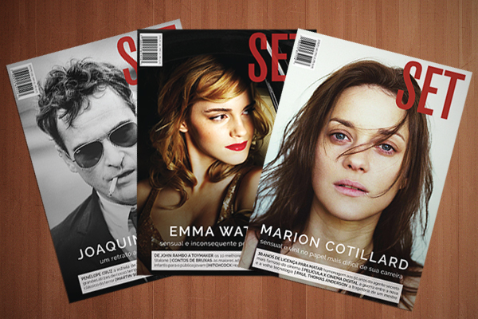
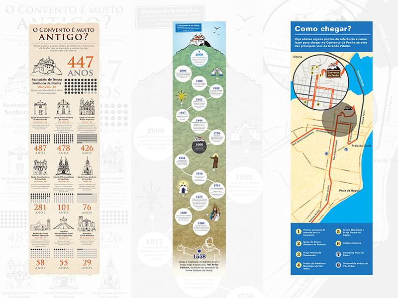
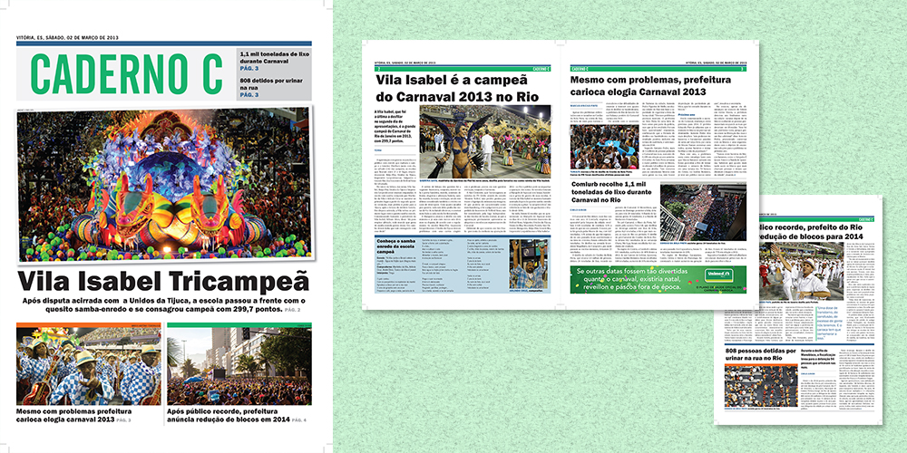
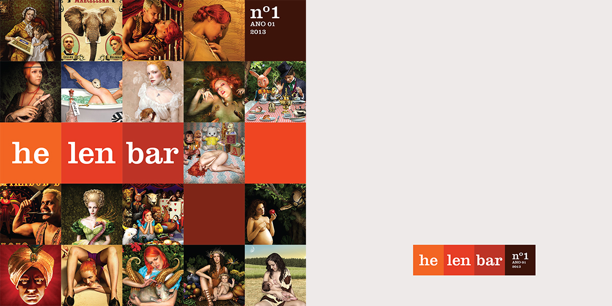

PUBLICAÇÃO
Clique nas imagens para ler sobre.
{kind=link}
-

N VITÓRIA 2015
Excercício de criação de poster feito para a cadeira de Meios e Metodos de Reprodução Gráfica do curso de Desenho Industrial da Universidade Federal do Espírito Santo (UFES) - Photoshop, 2012.
-
DIVERSIDADE CULTURAL E OS DESAFIOS DO MUNDO GLOBALIZADO
Excercício de criação de poster feito para a cadeira de Gráfica I do curso de Desenho Industrial da Universidade Federal do Espírito Santo (UFES) - Illustrator, 2012.
-

EXERCÍCIO DE DIAGRAMAÇÃO
Exercício de diagramação para a cadeira de Computação Gráfica I do curso de Desenho Industrial da Universidade Federal do Espírito Santo (UFES) - InDesign, 2012.
-

PROPAGANDA ENGANOSA
Encarte criado para trabalho acadêmico de um grupo de estudantes da Faculdade de Direito de Vitória (FDV) - Illustrator e Photoshop, 2012.
-

CAPAS SET
Criação de capas alternativas de uma revista elaborada em grupo para a cadeira de Computação Gráfica II do curso de Desenho Industrial da Universidade Federal do Espírito Santo (UFES) - Illustrator e Photoshop, 2012. Publicação completa no link.
LINK -

INFOGRÁFICOS CONVENTO
Criação de gráfico, linha do tempo e mapa para a cadeira de Projeto II do curso de Desenho Industrial da Universidade Federal do Espírito Santo (UFES) - Illustrator e Photoshop, 2012.
LINK -

CADERNO C
Exercício de diagramação de um caderno de jornal fictício para a cadeira de Gráfica II do curso de Desenho Industrial da Universidade Federal do Espírito Santo (UFES) - InDesign, 2013. Publicação completa no link.
LINK -

HELENBAR
Exercício de diagramação de uma revista fictícia para a cadeira de Gráfica II do curso de Desenho Industrial da Universidade Federal do Espírito Santo (UFES) - InDesign, 2013. Publicação completa no link.
LINK